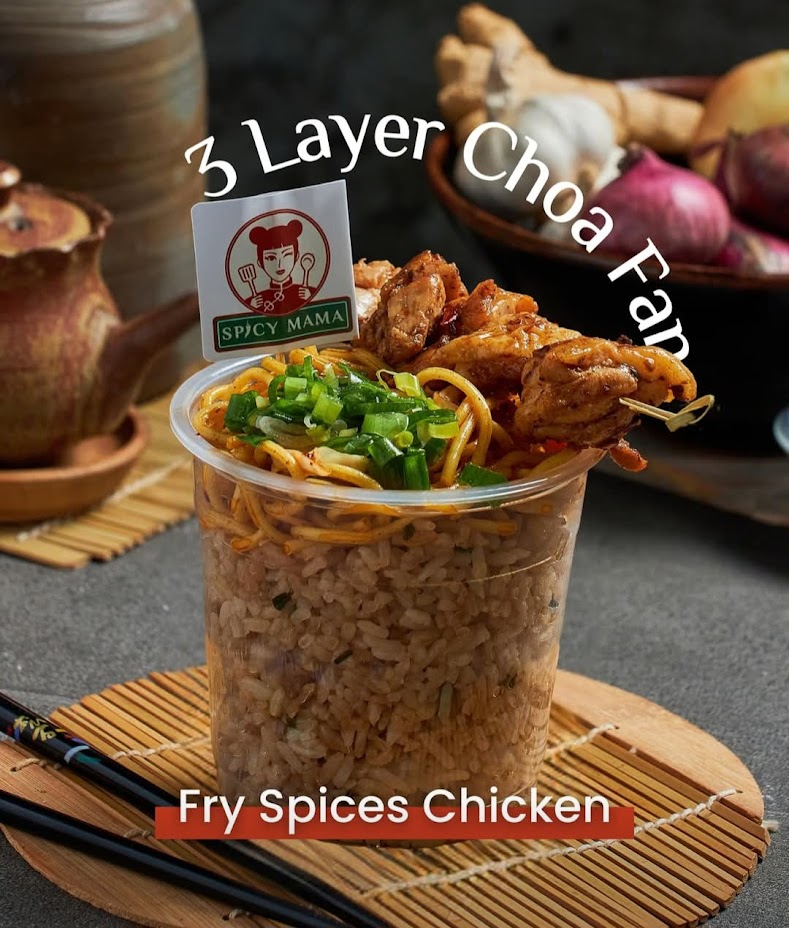
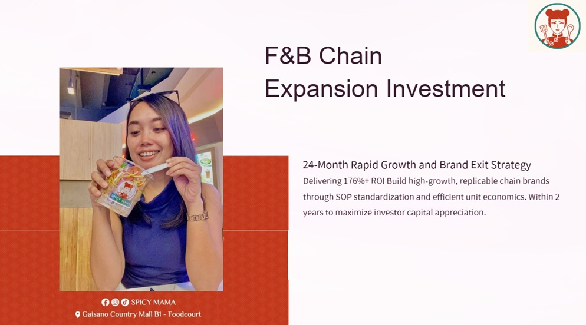
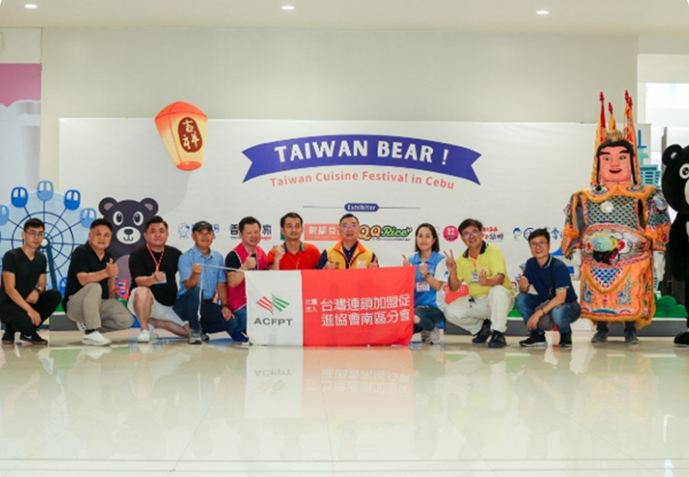
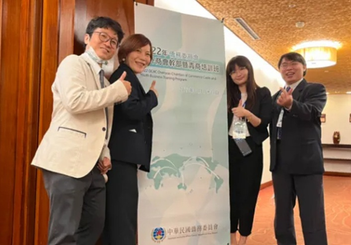
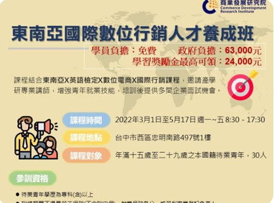
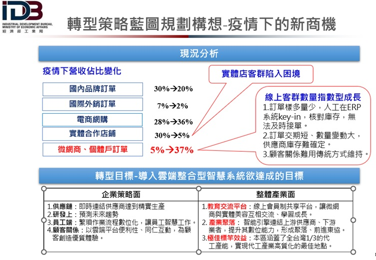

徐迎騫
專案與作品集

SpicyMama chain store
做為品牌創辦人，與宿霧當地夥伴合夥，進口台灣13香麻辣醬，搭配當地食材，建立簡單製作並獨特的餐食風味，鎖定大眾化市場，從品牌定位、選址到營運，並透過實地經營數據採集，深度分析當地消費行為與飲食偏好，作為產品在地化 (Localization) 與行銷策略之核心依據。
本店座落在當地商場的美食街，主打購物客群與學生，一開始營收不高，在第一版菜單的數據中，發現單純炒麵銷售量為一半飯一半麵的65%，原本我們知道當地民眾主食一定要飯，麵只是配菜，所以用主打炒麵，用一半飯一半麵的商品來實驗，但一半飯麵要搭配的肉品比例高使得價格過高，量出不來，確實實驗結果讓我們必須慎重的調整主力商品與成本，來做在地化，最後研發出如圖所示的 3 layer happiness 系列商品，即3層炒飯，飯比例高，並將麵和肉比例都降低，肉再添增更多種類，呈現出潮流的外觀、多樣化的選擇，並將流程簡化，才將整理的銷售量衝上來，成本降低；並搭配微網紅行銷，以餐點交換廣告的行銷方式，以較少的成本，換取較多微網紅的在地貼文，成功將來客數增加了40%。

Chain-Expansion-Investment-Plan
這是關於募資的簡報，說明24個月快速成長和品牌售出策略，其中第五頁提到低成本高效行銷方式，我們的行銷團隊具備品牌設計專業，自行研發微網紅APP，以媒合微網紅、交換廣告方式，並結合本土化的TikTok與Facebook病毒式傳播文化，這大幅降低了行銷支出，並優化了客戶獲取成本；進銷存管理系統，我們透過自研的庫存管理系統，連結銷售數據，每日監控核心原料成本，以數據驅動的營運決策，確保穩定的毛利率。

菲律賓宿霧台灣美食行銷暨展售活動
2023年主辦菲律賓宿霧台灣美食行銷暨展售活動，主要協助台灣餐飲集團拓展國際利基市場。期間協助晨間廚房、艋舺雞排、翔美雪花冰、傳香飯糰、香腸世家、永大生技、新橋食品、麻辣天后等8間連鎖餐飲品牌申請國貿局補助，連結宿霧台灣協會，到菲律賓宿霧做展售活動。與菲華文教中心、文藝中心、東方書院等重要組織聯誼，認識在地仕紳與餐旅集團，並於宿霧I.T. Park的Ayala Central Bloc 百貨商場舉辦「2023 宿霧臺灣美食展」，為台灣首場在宿霧的美食展，促成台灣餐飲拓展宿霧市場的機會。
宿霧台灣協會會長事後說，此展覽為宿霧有史以來第一場台灣美食展，能成真真的很難得，因為政府會比較傾向給馬尼拉的展覽較多資源，確實在我開始規劃時，發現外貿協會在海外展覽多半選擇一線城市或首都，但一線城市競爭力大，大型連鎖品牌已經先把地盤和政商關係打好，而中小集團因靈活性較高，應多嘗試發展中的利基市場，於是我與南區加盟連鎖加盟進協會余會長，以及我前老闆鷹展餐飲集團袁總經理討論後，受到他們支持後，運用我專案申請的經驗，有幸能申請到計畫補助，讓8間中型連鎖餐飲集團成行。

僑務委員會海外商會幹部暨青商培訓班
主辦2022年僑務委員會海外商會幹部暨青商培訓班，為商業發展研究院-經營模式創新研究所在職完成的專案之一，主辦僑委會培訓班，協助院長取得標案，主導執行到結案，包括文宣內容、學員手冊內容、五大洲學員資訊與聯絡事宜，跨業務部門、連結旅行社、各領域菁英講師、參訪單位(沙崙綠能科技示範場域、TTA臺灣科技新創基地南部據點、臺江國家公園、高雄亞灣新創園區、亞果遊艇)，規劃始業式、課程、參訪、餐宴到結業式等，此為本所第一個僑委會標案，成功的為接下來的合作帶來機會。

新品牌茶餐廳創立與餐飲經營實戰
專案背景與定位： 協助總經理從零到一創立新品牌茶餐廳並兼任店長。該茶餐廳共 3 樓（2樓約 90 個座位、3樓為 3 桌圓桌聚餐節慶包場用），精準定位客單價約 350 元。
營運實績與優化： 透過精準的現場控管與動線規劃，平日翻桌率達約 2 次、假日達 5 次，穩定創造每月 150~200 萬的亮眼營業額。
科技導入與成本控制： 與易碩科技合作導入線下/線上點餐與訂位 App，將茶餐廳系統 E化，不僅減少人事成本、提前為顧客座位與熟客習性做規劃，更讓整體人事成本成功降低 5%，顯著提升熟客回訪率。

餐飲連鎖標準化制度與 SOP 設立
制度建置與標準化： 為了解決連鎖餐飲擴點時常見的品質落差與管理痛點，親自主筆完成茶餐廳人員的新制工時與職級升遷手冊，建立完善的內部管理規範。
作業流程與教育訓練： 完整制定內外場標準作業流程（SOP）與營運手冊，並規劃系統化的教育訓練機制，使新進員工能快速上手，確保多店營運品質與服務水準的一致性。
財務控管與供應鏈管理： 導入標準化的成本控管與進銷存邏輯，從前端點餐到後端食材耗損進行嚴格的財務與供應鏈管理，有效降低營運成本並提升毛利率。
連鎖擴展支援： 積極參與連鎖加盟展並協助尋找潛在加盟主，透過完善的標準化制度與管理模組，為集團後續的規模化擴展與加盟推廣奠定扎實的基礎。

勞動部產業新尖兵試辦計畫-東南亞國際數位行銷人才養成班
我邀請相關講師並規劃課程，通過勞動部新尖兵計畫案的申請，為促進勞動部為5+2產業創新計劃之發展，因應新南向政策，國際行銷人才需求之增加，填補大學畢業所學與實際職場就業能力之缺口，特別結合東南亞X英語檢定X數位電商X國際行銷等元素，邀請產業、大學與研究機構專業講師，針對國際趨勢與企業需求，開設人才養成班，培養整合運用能力，並媒合多間企業，在培訓後提供面試機會，為青年提供切合趨勢與成長的解方。

工業局補助案-雲端整合型智慧系統導入計畫
此為商研院期間，協助生醫業者規劃數位轉型，並申請中小製造業接班傳承數位轉型-主題式研發計畫2千萬補助，此計畫通過第一階段審核。
內容:生醫工廠將引進雲端整合型智慧系統，主因為疫情期間實體店訂單大量下滑，但微網商、個體戶、團媽、客製化訂單大量增多，為提前因應大量客製化趨勢，結合政府專案引進智慧系統。
1.在接單時系統能主動串連line訊息等，拆單報價、快速反應顧客需求與交期、接單流程簡化、減低人工失誤。
2.將訂單快速連結製程與上游供應鏈，智慧化處理備料、供料與排程，降低原料耗損、做到精實生產。
3.在研發上能預測未來趨勢，讓員工能真正發揮智慧於工作，與維繫顧客關係，而不是把時間花在重複瑣碎的工作上；如此能將顧客滿意度提升、產值提升、獲利提升、員工福利提升、海外營收提升。